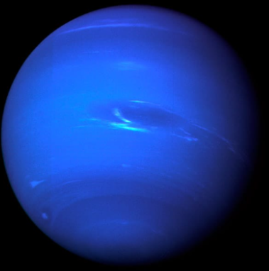

Neptuno es el más alejado del Sol y esto lo convierte en el planeta más frío del Sistema Solar. También, por el gas existente en su atmósfera, se ve de color azul. Posee un sistema de cuatro anillos formados por partículas de polvo. Su nombre es en honor a Neptuno, dios romano de las aguas.
